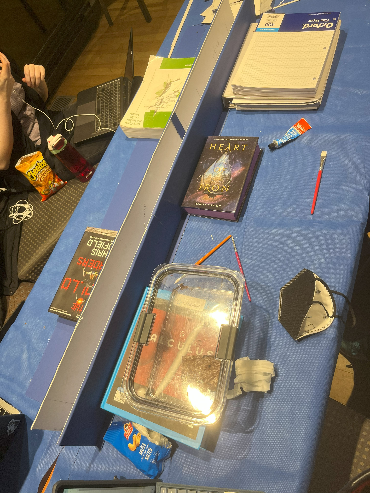

November 2023

Using the concepts taught in CIV102, three others and myself designed and created a bridge out of Matboard (cardboard-like material) that supported a small train initially weighing 400N. The train ran across the bridge multiple times, each time increasing in weight. It was calculated the bridge could withstand 540N of force before failure. The bridge failed at 500N passing the first two test cases of 400N and 447N. The image shows the train being pulled across our bridge.

We went through several iterations of the design of the cross section (pictured above) and ran code simulations in Python to test each one.

This is the final cross section of our bridge. Our bridge used a double webbed I beam cross section with a double layered top flange and a single bottom flange. The bridge had 12 diaphragms evenly spaced between it. This project really let me appreciate the iterative process of design as we would create a cross section, run the simulation for it, and then change it to improve it. We did this multiple times until we landed on our current cross section.
Once the design was finalized, the matboard pieces were cut out and attached together using cement glue. The Image shown below was taken while building the bridge.
